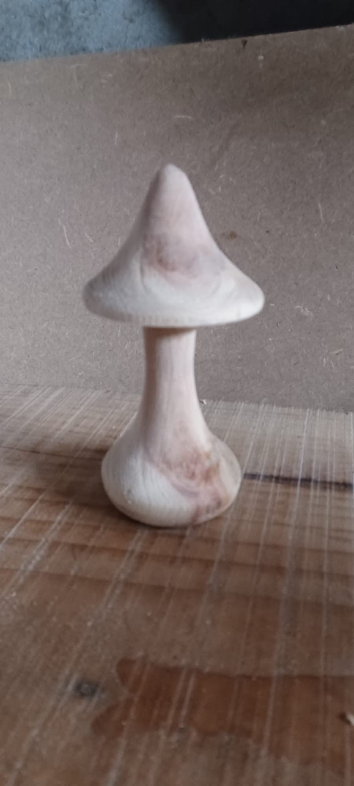

Nos Champignons Décoratifs

Champignon à dos pointus
Un design moderne et élégant pour ce champignon décoratif avec un bas qui se mélange avec sa tige.
Champignon à dos pointus sur bois
Un design moderne et élégant pour ce champignon décoratif avec un bas qui représente le sol.
Champignon à dos rond sur bois
Version traditionnelle avec un chapeau rond, rappelant la forme naturelle des champignons, avec un bas qui représente le sol.
Champignon à dos arrondie
Une autre variation de notre champignon classique, avec des courbes douces et harmonieuses et un bas qui se mélange avec sa tige.
À Propos de Nos Champignons
Chaque champignon est fabriqué à la main. Nous utilisons du bois de qualité.